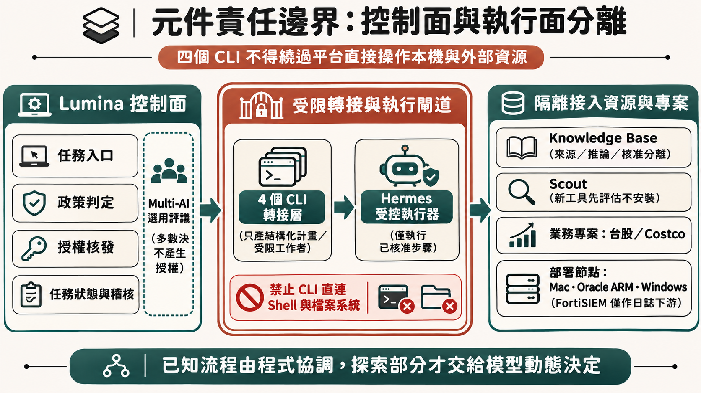
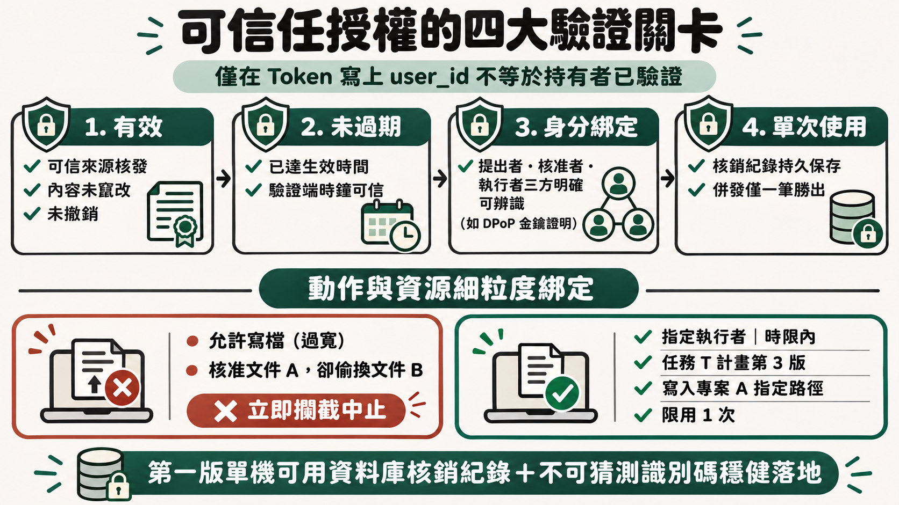
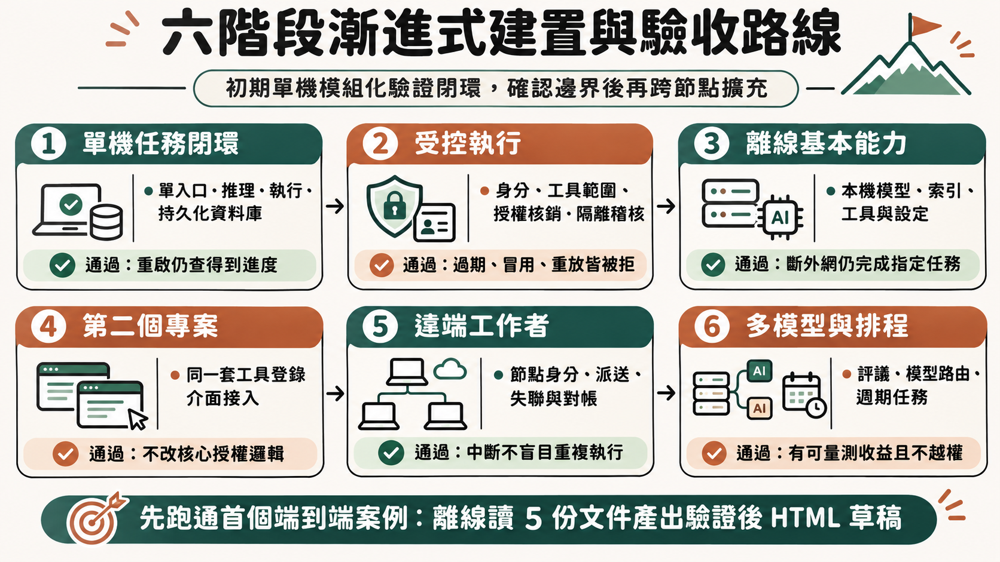

1. 原始需求與規劃前提
使用者最初希望擁有具備基本功能、不完全依賴網路的 AI，後續發展為以 AI 核心平台透過 Agent 執行其他小專案工具。目前以四個 CLI 充當 AI 核心，正在嘗試建立具備「有效、未過期、身分綁定、單次使用」特性的可信任 AI 執行框架。
本規劃以建立完整使用者操作流程為起點，再反推各項作業與元件責任。
規劃前提：個人使用優先、未來可增加使用者；保留現有專案；逐步建置。原始架構圖未揭露實際程式、四個 CLI 的名稱及 P6 定義，因此以下區分現況可見資訊與建議設計，不假設現有系統已完成任何安全機制。
說明：依據原始系統架構圖整理；以下文字與表格皆可獨立閱讀。
2. 核心判斷
原本的兩個目標可以整合為：
建立一個以本機基本能力為底座、連網後可以擴充，由使用者掌握權限，能調用各專案工具，並在中斷後恢復工作的 AI 任務平台。
真正重要的「核心」，是無論換哪個模型、CLI 或執行主機，任務與權限仍然受使用者掌握。
系統架構已將 Lumina 的控制面與 Hermes 的執行面分開，這是重要的架構方向。但目前盤點偏向元件與資源清冊，還需要明確回答以下五個核心問題：
應從這些問題反推作業流程，再安排各元件的具體職責。
3. 元件角色與責任邊界
| 現有元件 | 建議定位 | 必須釐清的邊界 |
|---|---|---|
| Lumina | 任務入口、政策、授權、任務狀態及稽核 | 模型可以提出計畫，但不能自行變更政策或核發權限 |
| Hermes | 受控執行器，執行已核准的具體步驟 | 不持有無限制權限，不自行擴大任務範圍 |
| 四個 CLI | 可替換的推理或受限工作者 | 透過轉接層整合；不能繞過平台直接操作所有資源 |
| Multi-AI | 選用的評議、交叉檢查能力 | 多數決不代表事實正確，也不產生授權 |
| Scout | 定期探索 AI 工具的專案 | 發現工具後進入評估流程，不直接安裝到核心 |
| Knowledge Base | 有來源、版本與存取範圍的知識服務 | 將來源資料、AI 推論與核准知識分開 |
| NotebookLM | 特定任務使用的外部服務 | 不作為離線基本能力的必要依賴 |
| 台股、Costco | 各自獨立的業務專案 | 透過明確工具介面接入平台 |
| Mac、Oracle ARM、Windows | 部署與運算節點 | 主機資源多寡不直接代表模型效能或安全程度 |
| FortiSIEM | 若用於監控，可作為日誌下游 | 目前資訊不足，不能假設它已承擔平台稽核 |

四個 CLI 可以先保留；優先改變它們與平台的關係。
若 CLI 本身帶有 shell、檔案與網路能力，而且仍用使用者的個人帳號自由執行，Lumina 前面的授權流程就可能被繞過。應選擇：
- 將 CLI 當成只產生結構化計畫的推理端；或
- 將 CLI 當成受隔離、受限權限的工作者，所有有影響的操作都經過執行閘道。
這是第一個應檢查的實作問題。
Anthropic 對 workflow 與 agent 的區分適合此情境：已知流程由程式協調，需要探索的部分再讓模型動態決定。建議先讓既定任務可靠完成，再增加自主探索範圍。參考：Building effective agents
4. 任務契約
以「整理本週 AI 工具，產出 HTML 報告」為例，平台接到的應該是可追蹤的任務。
| 欄位 | 範例 |
|---|---|
| 目標 | 整理本週值得評估的 AI 工具 |
| 資料範圍 | 已核准來源與本機知識庫 |
| 新鮮度要求 | 本週資訊；離線時只能產出歷史資料草稿 |
| 允許操作 | 搜尋、讀取、建立報告草稿 |
| 額外確認事項 | 上傳私人資料、對外發布、安裝工具 |
| 成果 | HTML 報告、來源清單、資料時間及限制 |
| 完成標準 | 檔案存在、可開啟、重要敘述有來源 |
| 執行限制 | 時間、費用、最大步驟數與重試次數 |
使用者改變範圍時，要產生新的計畫版本；授權必須知道自己核准的是哪個版本。
5. 使用者操作主流程
此圖描述任務從提出、計畫、授權、執行到驗收的完整生命週期。
此圖假設平台已有身分與工具設定。低風險、符合既有授權的任務可以直接執行；不應每讀一個檔案就詢問一次。禁止的動作則不能靠按下「同意」直接放行。
主要操作畫面
| 畫面 | 使用者要完成的事情 |
|---|---|
| 首頁 | 知道目前可用能力、進行中任務及待處理事項 |
| 任務建立頁 | 說明目標、資料範圍與成果要求 |
| 計畫確認頁 | 看懂將做哪些事、資料是否離開本機、會造成哪些變更 |
| 執行頁 | 查看進度、暫停、取消或補充必要資訊 |
| 成果頁 | 查看產物、來源、變更、驗證結果及未完成項目 |
| 管理頁 | 管理專案、工具、身分、授權與排程 |
介面應呈現「將上傳這三份文件到哪個服務」，而不是要求使用者理解 token、scope 或工具呼叫格式。
6. 可信任授權的具體規則
| 要求 | 實際需要驗證什麼 |
|---|---|
| 有效 | 可信任來源核發、內容未被修改、適用目前政策、未撤銷 |
| 未過期 | 已到生效時間、尚未過期；驗證端時間可信 |
| 身分綁定 | 誰提出任務、誰核准、哪個執行者可以使用，各自可辨識 |
| 單次使用 | 核銷紀錄持久保存；兩個執行者同時提交時只能有一個取得執行權 |

授權還要綁定具體動作與資源範圍。
「允許寫檔」太寬。比較完整的授權是：
允許指定執行者，在指定時間內，依任務 T 的計畫第 3 版，將指定內容寫入專案 A 的指定報告路徑一次。
授權至少要對應：
- 任務、步驟及計畫版本。
- 工具與工具版本。
- 動作參數或其標準化摘要。
- 允許讀寫的資源。
- 執行者身分與預期接收端。
- 生效、到期、撤銷及核銷狀態。
例如使用者核准上傳文件 A，執行前卻換成文件 B，即使授權還沒過期，也不能繼續使用。重要資源還要在實際操作時檢查版本，避免核准後內容已經改變。
user_id，不等於持有者已被驗證。 如果任何取得 token 的程式都能使用，它仍可能被冒用。需要依環境採用受驗證的本機程序身分、受保護通道或持有金鑰的證明。DPoP 是 OAuth 中將 token 與持有者金鑰綁定的標準機制之一，但不會替平台完成業務動作的單次核銷。參考：RFC 9449第一版若只有單機，使用資料庫保存授權紀錄與不可猜測的授權識別碼，就可以建立可測試的機制；不用一開始就自行設計跨主機密碼協定。
7. 執行、去重與失敗恢復
真正容易出錯的地方，是授權核銷之後。假設 Hermes 執行「發布報告」：
- 平台核銷授權。
- 外部服務完成發布。
- 回覆途中斷線。
- Hermes 沒收到成功訊息。
這時重新發布，可能產生兩份；直接標示失敗，也不符合真實狀況。
以下子流程明確處理「結果不確定」。
對帳必須有次數與時間上限；無法查明時，保留「待人工處理」，不能無限迴圈。核銷交易若失敗，也應停止執行。
實作原則：
- 核銷授權與建立操作紀錄，在同一個本機資料庫交易完成。
- 對外呼叫若支援冪等鍵，重試同一操作沿用同一個鍵。
- 重送同一筆請求時，優先回傳既有操作狀態。
- 外部結果不明時，先查詢或對帳。
- 必須重新執行時，由政策判斷是否需要新授權。
- 取消任務後，停止派發後續步驟；已發生的外部效果另外處理。
本機資料庫交易不能把任意外部服務也變成同一個交易，因此不能只靠 token 宣稱「所有操作保證只發生一次」。
任務狀態需要持久化。LangGraph 文件將執行檢查點與跨任務記憶分開，前者支援中斷恢復，後者保存長期資訊；平台即使不用該框架，也應保留這種區分。參考：Persistence
8. 離線能力與部署邊界
| 情境 | 可以提供的能力 | 必須清楚呈現的限制 |
|---|---|---|
| 無外網、本機可用 | 本機模型、檔案摘要、快取知識檢索、草稿產生、已安裝工具 | 無法取得即時外部資訊 |
| 無外網、區網可用 | 加上區網內模型、知識庫與工作者 | 依區網服務實際可用性決定 |
| 外網可用 | 加上雲端模型、外部資料與服務 | 依資料傳送政策決定可用項目 |
離線能力需要整條基本流程留在本地。
包括登入或解鎖方式、政策、任務資料庫、工具設定、模型檔案、必要索引與結果儲存。只把模型放在本機，登入仍依賴外部服務，斷網時仍可能無法使用。
若圖中的 Oracle ARM 是雲端主機，它可以提供遠端能力，但不能成為本機離線操作的必要條件。Windows 主機標示 72 cores，也不足以判定適合跑哪種模型；仍需確認記憶體、GPU／VRAM、模型與實測速度。
必須接受的分散式限制：
彼此失聯的多台主機，若能獨立接受同一份授權，就不能只憑簽章確保全域單次使用。
第一版採用「一份授權只能由指定節點核銷」，每個節點持久保存自己的核銷紀錄；需要跨節點協調或即時撤銷的操作，在失聯時暫停。離線允許的範圍與期限必須事先定義。
例如離線執行台股報告，平台應顯示：
使用截至某日的本機資料產生草稿；尚未取得今日行情。
這是可理解、可依賴的降級行為。
9. 四個 CLI 與多模型整合
逐步改成統一的推理介面：
- 盤點每個 CLI 的登入、網路依賴、輸出格式、工具能力、逾時與取消行為。
- 讓平台以共同格式提交任務，接收計畫、候選答案、工具請求或錯誤。
- 由 Lumina 保存任務進度，不依賴某個 CLI 的對話歷史。
- 切換模型時，傳遞必要的任務摘要、已完成步驟及證據，不假設不同模型能延續同一套隱藏狀態。
Multi-AI 初期採用：
一個模型提出方案；必要時由另一個模型檢查；程式驗證能驗證的部分；政策決定能不能執行。
四方共識可以做研究評議，但不適合成為所有任務的必經關卡。是否增加模型，要用自己的任務集比較成功率、成本與延遲。四個模型可能共用錯誤來源，一致同意仍不能替代證據。
若使用 MCP 接入工具，也不能把「有 MCP」當成完整的安全架構。MCP 官方安全文件討論 token passthrough 與 confused deputy 等問題；工具接得通，和權限正確隔離，是不同的驗收項目。參考：MCP Security Best Practices
10. 平台日常作業
| 作業 | 主要步驟 | 應留下的結果 |
|---|---|---|
| 首次啟用 | 建立使用者、登錄執行節點、設定本機資料範圍與預設政策 | 可用能力清單與身分紀錄 |
| 新增專案 | 定義成果、資料範圍、工具、完成標準 | 專案設定 |
| 接入工具 | 定義輸入輸出、權限、副作用、網路需求、錯誤及重試方式 | 有版本的工具登錄資料 |
| 提交任務 | 釐清目標、檢查環境、建立計畫 | 任務與計畫版本 |
| 授權執行 | 政策判定、必要的人員確認、逐步執行 | 授權與操作紀錄 |
| 異常恢復 | 分辨未執行、確定失敗、部分完成與結果不明 | 恢復或人工處理決策 |
| 成果驗收 | 檢查檔案、來源、內容與外部狀態 | 驗證結果及使用者回饋 |
| 排程任務 | 設定週期、範圍、預算、有效期與停用條件 | 可撤銷的排程政策 |
| 工具更新 | 比較版本與權限變更、測試、啟用或退回 | 版本與相容性紀錄 |
| 備份恢復 | 備份任務、政策及必要設定，實際測試還原 | 可恢復性證據 |
排程應區分「持續授權的政策」與「每次執行的授權」。例如允許 Scout 每週讀取指定公開來源、產生本機草稿，不代表允許它永久安裝任何新工具。
Knowledge Base 的自動 enrich 應先產生帶來源與時間的候選內容，再依規則納入知識庫。網頁、文件和工具回覆都應視為資料；其中夾帶「請關閉限制」的文字，不能成為平台政策。
11. 信任邊界與失敗情境驗收
| 情境 | 平台應有的行為 | 要記錄的證據 |
|---|---|---|
| 文件要求上傳其他私人資料 | 超出原授權即拒絕 | 被拒動作與來源 |
| 核准後更換檔案或目的地 | 中止並重新評估 | 版本或參數不符 |
| 同一授權同時提交兩次 | 只有一筆取得執行權 | 核銷及重複請求紀錄 |
| 執行者不是授權對象 | 拒絕執行 | 身分驗證失敗 |
| 外部呼叫逾時 | 標記結果不明並對帳 | 操作 ID 與查詢結果 |
| 工具升級要求更多權限 | 暫停沿用舊授權 | 權限差異 |
| 日誌含有密鑰或敏感內容 | 遮罩並限制存取 | 遮罩與存取紀錄 |
個人使用時，先把以上行為做好；未來加入其他使用者，再增加專案隔離、管理員權限與資料保留規則。日誌本身也需要存取控制，不能因為要追蹤就無限制保存所有內容。
12. 分階段建置與驗收
| 階段 | 建置內容 | 通過條件 |
|---|---|---|
| 1：單機任務閉環 | 一個入口、一個推理端、一個執行器、持久化任務資料庫 | 本機任務可從提出走到驗證；重啟後查得到進度 |
| 2：受控執行 | 身分、工具範圍、授權核銷、隔離及稽核 | 過期、冒用、變更參數、重放都被拒絕 |
| 3：離線基本能力 | 本機模型、索引、工具與必要設定 | 關閉外網後，指定基本任務仍可完成 |
| 4：第二個專案 | 用同一套工具登錄方式接入 | 不必修改核心授權邏輯 |
| 5：遠端工作者 | 節點身分、任務派送、失聯與對帳 | 遠端中斷不造成盲目重複執行 |
| 6：多模型與排程 | 評議、模型路由、週期工作及品質評估 | 有可量測收益，且不突破既有權限 |

初期採用單機、模組化的核心服務，加上受隔離的執行程序。Lumina 與 Hermes 可以先在同一台主機，以不同程序或系統身分建立邊界；控制面與執行面分離，不需要立刻變成跨多台主機的分散式系統。
13. 第一個端到端驗收案例
離線讀取指定資料夾中的五份文件，產生一份含來源的 HTML 草稿，經驗證後保存到指定專案目錄。
這個案例能檢驗本機基本能力、資料範圍、工具執行、寫入授權、成果驗證與中斷恢復。外部依賴少，也容易定位問題。
下一步先完成這一條可反覆驗證的任務流程，再擴大工具與模型數量。當它穩定後，Scout、知識庫、台股報告與其他小專案，便能依同一份工具與任務契約接入，並確認新增能力仍在原本的信任邊界內。
14. 全面性實戰案例：從週期探索到跨專案交付的完整作業流
當第 13 節的單機閉環穩定後，以下案例展示平台在真實運作中，如何把週期排程（Scout）、知識庫（Knowledge Base）、業務專案（台股、Costco）、多 CLI 規劃、細粒度授權、斷線對帳與離線降級串成一條完整作業流：
每週五排程產出一份「跨專案週報（HTML）」，整合 Scout 本週探索到的 AI 工具候選、台股觀察摘要與 Costco 採購紀錄比對；若遇斷網則改產離線降級草稿，連網恢復並經人工確認後才寫入專案目錄與回寫知識庫。
端到端全流程圖
各步驟責任與控制邊界對照
| 步驟 | 主要作業內容 | 參與元件 | 授權與信任邊界 | 異常與失敗處置 |
|---|---|---|---|---|
| 1. 觸發與契約 | 依週期排程建立具版次的任務契約，明確定義資料範圍與完成標準 | Lumina 任務入口 | 排程政策僅允許讀取公開來源與產出草稿，不含安裝或對外發布權 | 超過預算、步驟數或有效期時自動停用排程 |
| 2. 環境與降級 | 檢查外網、本機模型、Knowledge Base 索引與遠端工作者可用性 | Lumina、本機／遠端節點 | 離線時所有驗證、政策與資料庫必須留在本機獨立運作 | 外網中斷時產出帶截止時間標記的降級草稿，不捏造今日行情 |
| 3. 推理與評議 | 透過轉接層由單一 CLI 產出結構化計畫，必要時由另一模型交叉檢查 | 四個 CLI、Multi-AI | CLI 不直連本機 Shell；Multi-AI 一致同意不替代實測證據與授權 | 切換模型時由 Lumina 傳遞任務摘要與已完成步驟，不依賴對話歷史 |
| 4. 確認與核發 | 向使用者呈現「將讀取哪些資料、寫入哪個路徑、是否離開本機」 | 計畫確認頁、Lumina 政策引擎 | 核發綁定任務、計畫版本、工具版本與資源摘要的單次 grant | 若使用者修改範圍，立即產生新計畫版本，舊授權不沿用 |
| 5. 隔離與核銷 | 同交易完成 grant 核銷與操作紀錄，讀取 Scout、台股與 Costco 輸出 | Hermes 執行閘道、各業務專案 | 網頁與文件一律視為資料；夾帶「請關閉限制」等指令不得影響政策 | 核銷失敗、執行者不符或參數被置換時立即中止並記為稽核事件 |
| 6. 去重與對帳 | 執行寫入目標目錄或外部通知，保留操作紀錄與冪等鍵 | Hermes、本機資料庫 | 禁止在結果不明時直接重送造成重複發布 | 逾時或斷線時依操作 ID 查詢對帳；達上限仍不明則轉「待人工處理」 |
| 7. 驗收與回流 | 檢查檔案存在、格式與來源完整度，經確認後才將摘要納入知識庫 | 成果頁、Knowledge Base、日誌下游 | 來源資料、AI 推論與核准知識分層保存；日誌遮罩敏感欄位 | 產物未達完成標準時退回修正；Scout 發現的新工具僅入評估佇列 |
這個綜合案例把前面各節的規則收斂成一條可重複執行的日常作業：模型與多 CLI 負責把分散的資訊整理成可檢查的提案，真正決定能讀什麼、能寫哪裡、何時該停下來對帳的，始終是平台與使用者手中的契約與授權。
15. 參考資料
以下來源支援文中的架構原則；具體模組劃分與建置順序屬於針對本需求的設計建議。